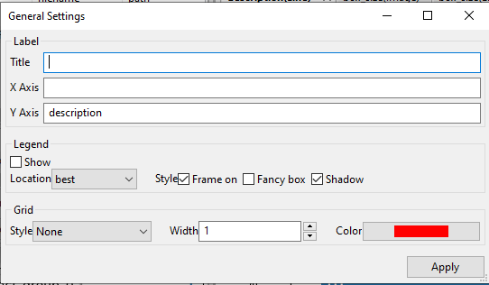
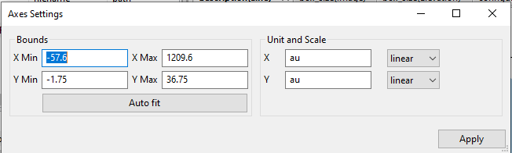
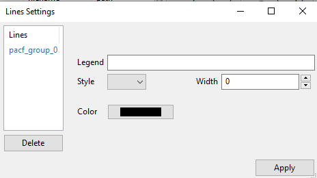
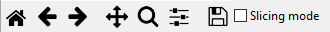
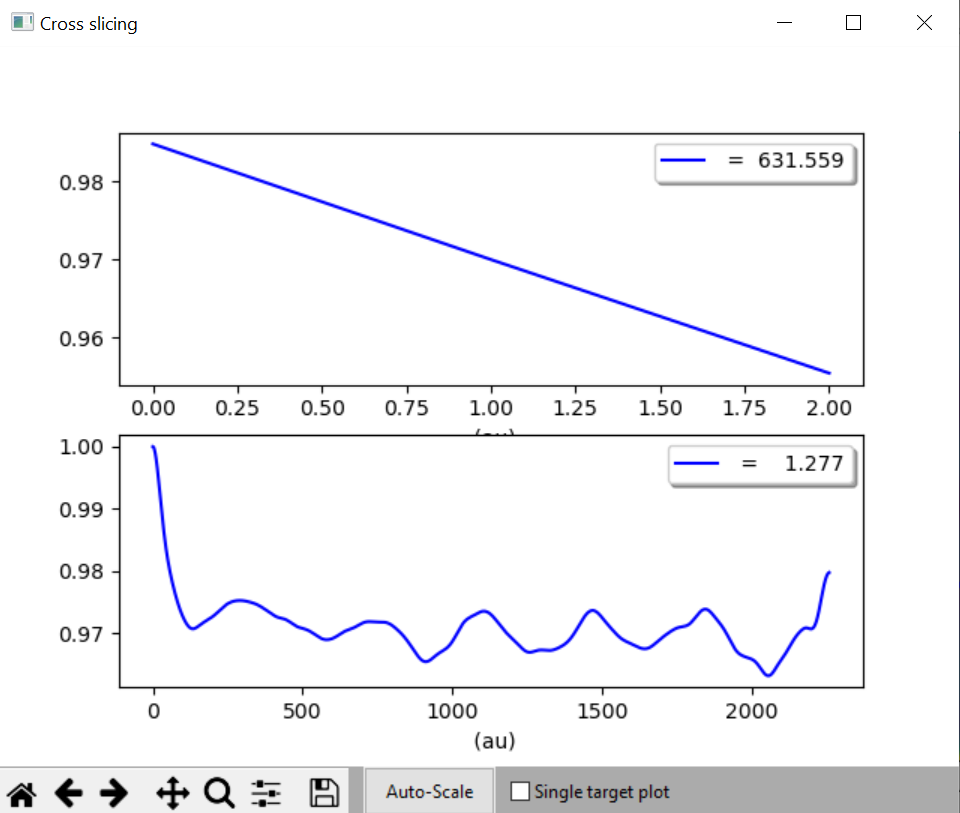
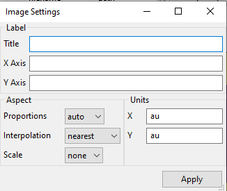
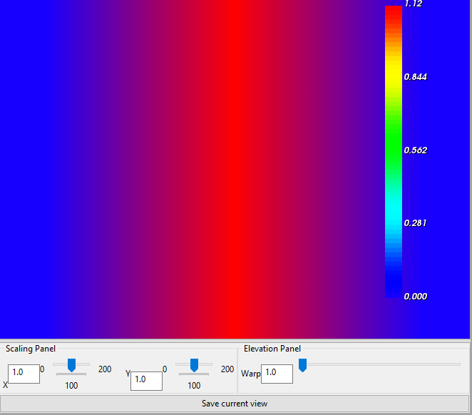
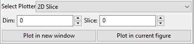
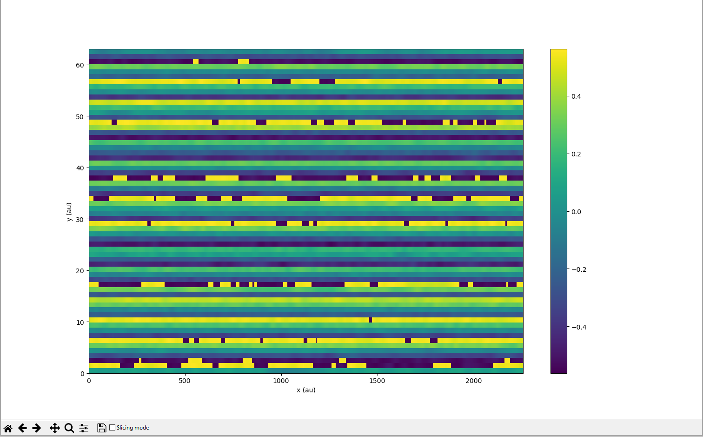
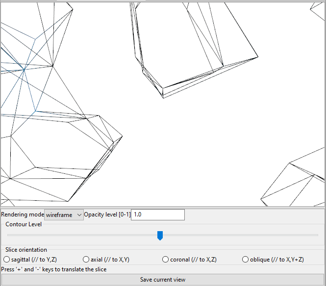

10. Plotting Options
10.1. Line Plotter
10.1.1. Toolbar
Data plotted with the Line Plotter will have the following menu beneath the graph:

The top-row buttons, going from left to right, have the following functions:
Home restores the plot to the default position. Ie. if it has been moved, zoomed in/out, axes adjusted, etc., it will be restored to the position it was in when it was plotted. This position is one MDANSE determined to be the best fit and shows all the data.
Back undoes the latest action.
Forward redoes the latest undone action.
Pan gives the ability to use mouse to move the graph. After this option is activated, you can drag the plot around to adjust what is visible inside the axes. This mode can be disabled by clicking on its icon again.
Zoom gives the ability to zoom in. Once activated, you can select an area inside the axes that will be zoomed in on. This mode can be disabled by clicking on its icon again.
Subplots opens the Configure subplots window, like the one below. It can be used to adjust various parameters of the whole graph. The red lines signify the original positions, while the blue bars show the current value. The values can be adjusted by clicking inside the relevant bar, and the blue bar will move to the clicked position. PLEASE NOTE that whatever changes you make are automatically applied and saved. There is no confirmation prompt when closing this window, and when it is reopened, the red bars will move to the new positions. The changes can only be reverted by using the Back or Home buttons.
left moves the left vertical ax to change the size of the plot.
bottom moves the bottom horizontal ax to change the size of the plot.
right moves the right vertical ax to change the size of the plot.
top moves the top horizontal to change the size of the plot.
wspace changes the vertical spacing between multiple graphs (matplotlib subplots)
hspace changes the horizontal spacing between multiple graphs (matplotlib subplots)
Save opens a file browser that allows you to save the graph in one of these formats: EPS, PGF, PDF, PNG, PS, RAW, RGBA, SVG, or SVGZ.
Below this row of buttons is a field called Offset value, which allows for changing the y-axis offset.
10.1.3. General settings
Clicking on General settings in the above menu opens this window:
Label
Title
Format; str
Default: None
Description: sets a title for the graph. This will appear above the figure.
X Axis
Format: str
Default: the name of the variable plotted on the x-axis
Description: sets the x-axis label. This will appear below the bottom ax, to the left of the x-axis units. The units cannot be formatted here, but they can be changed in Axes settings.
Y Axis
Format: str
Default: the name of the first plotted variable
Description: sets the y-axis label. This will appear below the bottom ax, to the left of the y-axis units. The units cannot be formatted here, but they can be changed in Axes settings.
Legend
Show
Format: bool
Default: False
Description: if ticked, causes the legend to appear.
Location
Format: drop-down
Default: best
Description: the location where the legend will appear on the graph. Since MDANSE uses matplotlib for plotting, these options are all the ones available in matplotlib and so function like those. For more information, matplotlib documentation might be of use.
Style
Frame on
Format: bool
Default: True
Description: Adds a frame around the legend.
Fancy box
Format: bool
Default: False
Description: Slightly changes the legend frame/shadow. Only works if the frame is on.
Shadow
Format: bool
Default: True
Description: Adds a shadow beneath the legend.
Grid
Style
Format: drop-down
Default: None
Description: decides how the grid should look.
Width
Format: int
Default: 1
Description: the thickness of the lines making up the grid.
Color
Format: window
Default: red
Description: opens a window that allows for advanced colour selection. The colour is the colour of the lines making up the grid.
Apply button applies the changes to the graph without closing the window.
10.1.4. Axes settings
The Axes settings button in the right-click menu opens the following window:
Bounds
X Min
Format: float
Default: value corresponding to the best fit
Description: the x value at which the y ax intercepts the x ax.
Y Min
Format: float
Default: value corresponding to the best fit
Description: the y value at which the x ax intercepts the y ax.
X Max
Format: float
Default: value corresponding to the best fit
Description: the x value denominating the right end of the graph
Y Max
Format: float
Default: value corresponding to the best fit
Description: the y value denominating the top end of the graph
Auto fit button restores all the above values to their defaults, ie. it adjusts the graph to the best fit, where all data is visible and least white space is left. It automatically applies the changes.
Unit and Scale
X
Format: str; drop-down
Default: depends on physical quantity (more info in Units); linear
Description: the units that the data making up the graph is in. Both the plot and the axis label are adjusted once Apply is pressed.
Y
Format: str; drop-down
Default: depends on physical quantity (more info in Units); linear
Description: the units that the data making up the graph is in. Both the plot and the axis label are adjusted once Apply is pressed.
Apply button applies the changes to the graph without closing the window.
10.1.5. Lines settings
The Lines settings button in the right-click menu opens the following window:
The Lines box is a list of all lines in the figure. These lines can be selected by clicking on them, which allows them to be manipulated.
Delete button deletes the line from the graph.
Legend
Format: str
Default: the name of the selected line as it shows up in the Lines block
Description: the name of the line that appears in the legend.
Style
Format: drop-down
Default: -
Description: determines how the line should look like.
Width
Format: int
Default: 1
Description: the width of the line.
Color
Format: window
Default: generated automatically by matplotlib
Description: opens a window that allows for advanced colour selection. Allows for changing the line colour.
Apply button applies the changes without closing the window.
10.2. Image Plotter
At the bottom of an Image Plotter is the menu below. The functions of the buttons, from left to right, is below that.
Home restores the plot to the default position. Ie. if it has been moved, zoomed in/out, axes adjusted, etc., it will be restored to the position it was in when it was plotted. This position is one MDANSE determined to be the best fit and shows all the data.
Back undoes the latest action.
Forward redoes the latest undone action.
Pan gives the ability to use mouse to move the graph. After this option is activated, you can drag the plot around to adjust what is visible inside the axes. This mode can be disabled by clicking on its icon again.
Zoom gives the ability to zoom in. Once activated, you can select an area inside the axes that will be zoomed in on. This mode can be disabled by clicking on its icon again.
Subplots opens the Configure subplots window, like the one below. It can be used to adjust various parameters of the whole graph. The red lines signify the original positions, while the blue bars show the current value. The values can be adjusted by clicking inside the relevant bar, and the blue bar will move to the clicked position. PLEASE NOTE that whatever changes you make are automatically applied and saved. There is no confirmation prompt when closing this window, and when it is reopened, the red bars will move to the new positions. The changes can only be reverted by using the Back or Home buttons. (The illustrations are of a line plot, but exactly the same happens to an Image Plot)
left moves the left vertical ax to change the size of the plot.
bottom moves the bottom horizontal ax to change the size of the plot.
right moves the right vertical ax to change the size of the plot.
top moves the top horizontal to change the size of the plot.
wspace changes the vertical spacing between multiple graphs (matplotlib subplots)
hspace changes the horizontal spacing between multiple graphs (matplotlib subplots)
Save opens a file browser that allows you to save the graph in one of these formats: EPS, PGF, PDF, PNG, PS, RAW, RGBA, SVG, or SVGZ.
Slicing mode, when ticked, allows you to select any point in the plot. This point will remain marked by a cross (see below) on the plot until Slicing mode is deactivated.
The selection also makes the following window to appear. There is no limit to how many points may be selected, and each point will appear in the window as different colour, corresponding to the colour of the cross.
The upper plot shows how value changes across the x-axis at the y-value of the chosen point, while the bottom plot shows how the value changes across the y-axis at the x-value of the chosen point.
The buttons in the bottom bar work the same as the corresponding buttons in the Image Plot. The other buttons work thusly:
Auto Scale adjusts the y-axis so that it contains 0.
Single target plot checkbox determines whether additional slices should be added to the same ‘Cross slicing’ window. It does not take effect immediately; if it is checked but the window is not closed, additional cross slices will be added to the plots in the opened window. However, if the box is checked then the window is closed, any cross slices made will open a new window where all the previously made slices are present plus the new one. In this case, the windows corresponding to older slices are not altered.
For illustration, if the box is unchecked or the window is not closed after checking the box, only one ‘Cross slicing’ window will be open and will change thusly (left to right) as further slices are performed:

{kind=link}
{kind=link}
{kind=link}
{kind=link}
{kind=link}
{kind=link}
{kind=link}
{kind=link}
{kind=link}
{kind=link}
{kind=link}
{kind=link}
{kind=link}
{kind=link}
{kind=link}
{kind=link}
{kind=link}
{kind=link}
{kind=link}
{kind=link}
{kind=link}
{kind=link}
If the first window is closed after checking the box, new windows will continue being created like so:
{kind=link}
{kind=link}
{kind=link}
10.2.2. Settings
By clicking on Setting, the following window will open:
{kind=link}
Label
Title
Format; str
Default: None
Description: sets a title for the graph. This will appear above the figure.
X Axis
Format: str
Default: the name of the variable plotted on the x-axis
Description: sets the x-axis label. This will appear below the bottom ax, to the left of the x-axis units. The units cannot be formatted here, but they can be changed in Axes settings.
Y Axis
Format: str
Default: the name of the first plotted variable
Description: sets the y-axis label. This will appear below the bottom ax, to the left of the y-axis units. The units cannot be formatted here, but they can be changed in Axes settings.
Aspect
Proportions
Format: drop-down
Default: auto
Description: changes how the scale of the x-axis and y-axis is related. ’auto’ automatically decides how to fit the plot, while ‘equal’ makes both axes range between the same values.
interpolation order
Format: drop-down
Default: Nearest
Description: the algorithm to use for image scaling. For more information, see matplotlib documentation [37].
Scale
Format: drop-down
Default: none
Description: changes the scale of the axes.
Units
X
Format: str
Default: depends on physical quantity (more info in Units)
Description: the units that the data making up the graph is in. Both the plot and the axis label are adjusted once Apply is pressed.
Y
Format: str
Default: depends on physical quantity (more info in Units)
Description: the units that the data making up the graph is in. Both the plot and the axis label are adjusted once Apply is pressed.
Apply button applies the changes without closing the window.
10.3. Elevation Plotter
An elevation plot should look like this when opened:
{kind=link}
You can use the mouse to drag the plot around to change the perspective, a bit similar to how Pan would behave in Image Plotter when activated. The plot can be zoomed in or out using the scrolling wheel or touchpad.
The Scaling Panel in the toolbar can be used to change the size of the plot, either along x-axis or y-axis, depending on which part is used. Please note, however, that it is possible that only a part of the plot is initially visible, meaning the changes on screen are only a side-effect of actual changes. Both the input field and the sliding bar achieve the same purpose.
The Elevation Panel changes the contrast of the colours in the plot. Both the input field and the sliding bar achieve the same purpose.
The Save current view button opens a file browse, allowing the current contents of the screen (inside the plot, ie. not toolbar) to be saved as a PNG file.
10.4. 2D Slice Plotter
This plotter was created to help visualising the 3D trajectory variables, configuration, velocities, and gradients. It creates a 2D plot of a 3D variable. Therefore, extra setup is required before it can be used, and so it looks as follows in the Data panel:
{kind=link}
Dim
Format: positive int
Default: 0
Description: the dimension that will appear as the colour gradient in the plot. The other two dimensions will be plotted on the x and y axes of the plot. Only values 0, 1, and 2 are accepted. Which dimension is which number can be determined from the ‘Axis’ column in the Data panel if it is populated, or the ‘Size’ column if the former is not. The dimensions are assigned number in the order in which they appear, so, e.g., if ‘Axis’ column shows ‘time,atom,dim’, then time is 0, atom is 1, and dim is 3.
Slice
Format: positive int
Default: 0
Description: the part of the dimension that is plotted. Only values from 0 to the size of the dimension are accepted. For example, if Dim corresponding to the dimension of the configuration variable (i.e., the x, y, or z component) is selected, then the Slice field corresponds to those x/y/z components. Thus, if in this example, we select Slice of 1 (i.e., the y component), then we get a 2D plot with time and the number of atoms on the x and y axes, and the colour gradient corresponds to the y-component of the position vectors (picture below).
When this plotter is configured with the above options and plotted, a plot similar to below will be obtained.
{kind=link}
For the description of the various manipulations of this plot, please see Image Plotter. 2D Slice Plotter uses Image Plotter under the hood, meaning that the various options are identical.
10.5. Iso Surface Plotter
When opened, this plotter might look like this:
{kind=link}
You can use the mouse to drag the plot around to move the 3D picture. The plot can be zoomed in or out using the scrolling wheel or touchpad.
Rendering mode
Format: drop-down
Default: line
Description: changes which geometric shapes (points, lines, surface) is used to display the surface.
Opacity level
Format: float of value 0-1
Default: 1.0
Description: changes the opacity/transparency of the objects used to display the surface.
Contour Level
Format: sliding bar
Default: middle
Description: changes how much space the shapes making the surface take. <insert>
Slice orientation
Format: multiple choice
Default: None
Description: adds a coloured plane described by the shown axes that slices through the surface. After clicking on the plot, the plane can be moved along the axis not mentioned in the chosen plane’s name by using + and – keys.
Save current view button opens a file browser that allows the current view to be saved as a PNG file.
10.6. Scalar-Field Plotter
<insert>
The units used by MDANSE are nm for length and ps for time, and their inverses for Q (nm1) and angular frequencies, (ps1). Any input must be given using these units, and the output files do also employ the same units. The 2D/3D plotter includes the Python magnitude module, so you can modify the units when plotting the results using the Axes settings (available from the context menu that appears by right clicking on the plot). If you use the export option in the graphic after having changed the units, your output file will be saved with the desired units. But remember that the original output file (typically a netCDF4) is written using the original standard units.
The list of prefixes to physical quantities is listed in Table 1. The leftmost column is what can be written in front of the symbol of a physical quantity.
Table 1: A list of prefixes that can be used to modify units.
Symbol |
Name |
Value |
y |
yocto |
1e-24 |
z |
zepto |
1e-21 |
a |
atto |
1e-18 |
f |
femto |
1e-15 |
p |
pico |
1e-12 |
n |
nano |
1e-9 |
u |
micro |
1e-6 |
m |
mili |
1e-3 |
c |
centi |
1e-2 |
d |
deci |
1e-1 |
da |
deca |
1e1 |
h |
hecto |
1e2 |
k |
kilo |
1e3 |
M |
mega |
1e6 |
G |
giga |
1e9 |
T |
tera |
1e12 |
P |
peta |
1e15 |
E |
exa |
1e18 |
Z |
zetta |
1e21 |
Y |
yotta |
1e24 |
All these prefixes can be used with any of the units from Table 2. All these units can also be accessed through the Units Editor.
Table 2: A list of all units that can be used in MDANSE.
Symbol |
Unit |
Value in SI units |
Physical quantity |
au |
atomic unit |
0 |
|
m |
meter |
1 m |
length |
ang |
Angstrom |
1 * 10-10 m |
|
ft |
foot |
0.3048 m |
|
inch |
inch |
0.0254 m |
|
ly |
light year |
9. 460,730,472,58 * 1015 m |
|
b |
Barn |
1 * 10-28 m2 |
surface |
l |
litre |
1 * 10-3 m3 |
volume |
s |
second |
1 s |
time |
year |
year |
3 1,556,925.9747 s |
|
day |
day |
86400 s |
|
h |
hour |
3600 s |
|
min |
minute |
60 s |
|
kg |
kilogram |
1 kg |
mass |
g |
gram |
1 * 10-3 kg |
|
uma |
unified mass unit |
1.660,540,2 * 10-27 kg |
|
mol |
mole |
1 mol |
amount of mass |
J |
Joule |
1 kg m2 s-2 |
energy |
eV |
electron volt |
1.602,176,49 * 10-19 kg m2 s-2 |
|
cal |
calorie |
4.184 kg m2 s-2 |
|
cal_per_mole |
calorie per mole |
6.947,78 * 10-24 kg m2 s-2 mol-1 |
|
J_per_mole |
Joule per mole |
1. 660,559,273,42 * 10-24 kg m2 s-2 mol-1 |
|
Ha |
Hartree |
4.359,743,94 * 10-18 kg m2 s-2 |
|
K |
Kelvin |
1 K |
temperature |
N |
Newton |
1 kg m s-2 |
force |
Pa |
Pascal |
1 kg m-1 s-2 |
pressure |
W |
Watt |
1 kg m2 s-3 |
power |
Hz |
Hertz |
1 s-1 |
frequency |
A |
Ampere |
1 A |
electric current |
C |
Coulomb |
1 A s |
charge |
V |
Volt |
1 kg m2 s-3 A-1 |
voltage |
F |
Farad |
1 s4 A2 kg-1 m-2 |
capacitance |
ohm |
Ohm |
1 kg m2 s-3 A-2 |
resistance |
S |
Siemens |
1 s3 A2 kg-1 m-2 |
conductance |
Wb |
Weber |
1 kg m2 s-2 A-1 |
magnetic flux |
T |
Tesla |
1 kg s-2 A-1 |
flux density |
H |
Henry |
1 kg m2 s-2 A-2 |
inductance |
cd |
Candela |
1 cd |
luminous intensity |
lm |
Lumen |
1 cd sr |
luminous flux |
lux |
lux |
1 cd sr m-2 |
illuminance |
Bq |
Becquerel |
1 s-1 |
radioactivity |
Gy |
gray |
1 m2 s-2 |
ionising radiation |
kat |
Katal |
1 mol s-1 |
catalytic activity |
dpi |
inches in meter |
39.370, 078,740,157,48 m-1 |
|
gravity |
gravitational constant |
9.80665 m s-2 |
acceleration |
c |
speed of light |
2.997,924,58 * 108 m s-1 |
velocity |
rad |
radian |
1 rad |
angle |
cyc |
cycle |
6.283,1 85,307,179,586 rad |
|
sr |
steradian |
1 sr |
solid angle |
inv_nm |
inverse nm |
1 * 109 m-1 |
Inverse length |
akma_time |
AKMA time |
20.454, 829,497,745,98 * 10-12 s |
time |